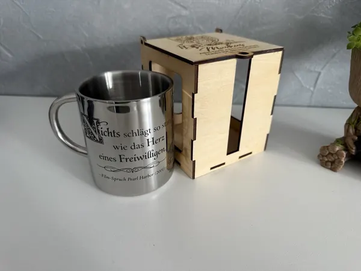
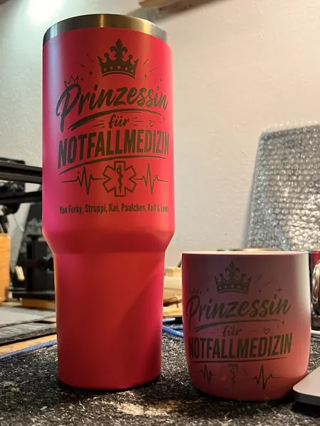
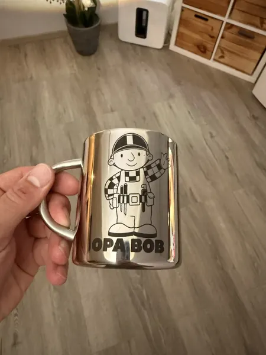
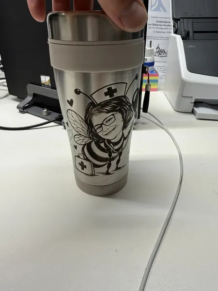
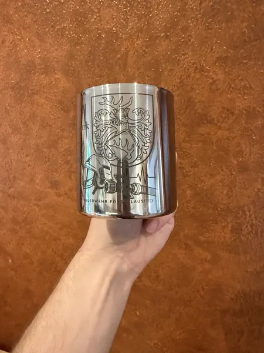
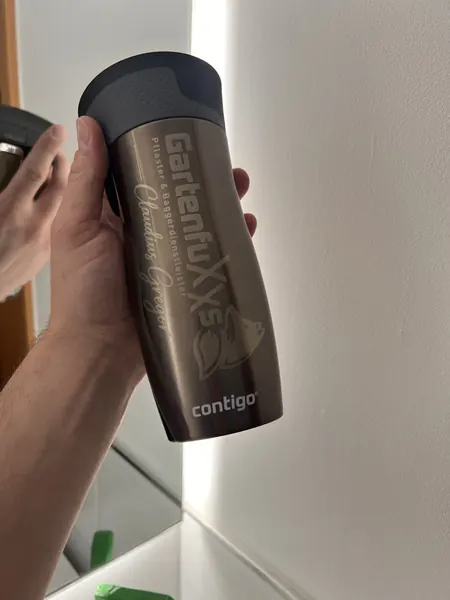
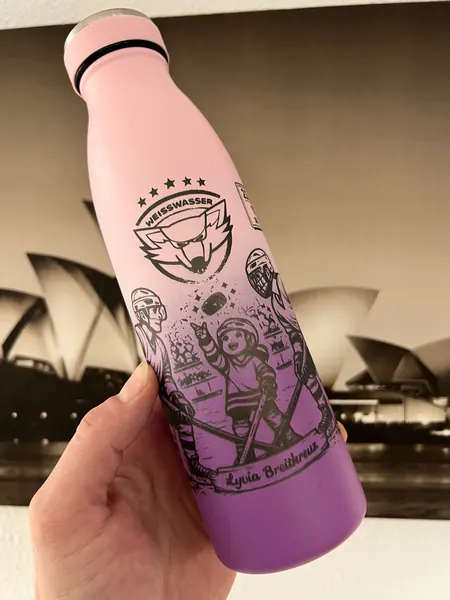
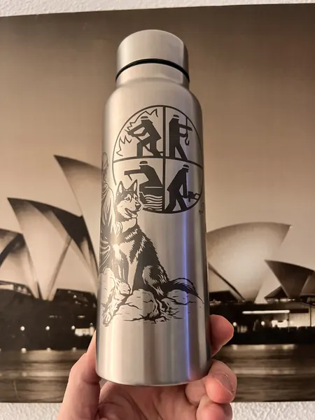
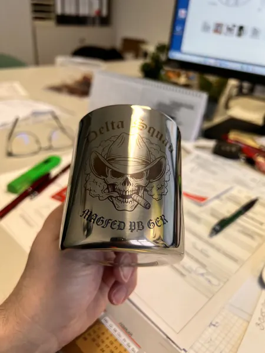
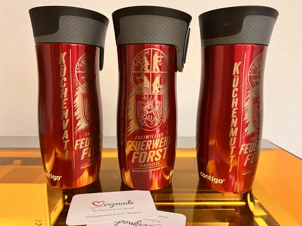

Für das Herz eines Freiwilligen
Edelstahltasse für einen Feuerwehrmann mit dem Filmspruch aus „Pearl Harbor“: „Nichts schlägt so stark wie das Herz eines Freiwilligen“. Dazu eine Geschenkbox aus lasergeschnittenem Holz.
Materialien / Edelstahl
Individuelle Arbeiten von Herzmade aus Döbern. Lass dich inspirieren und bring deine eigene Idee mit.
Bei Herzmade aus Döbern (03159, Lausitz) veredeln wir Edelstahl mit moderner Lasertechnik. Dabei entsteht keine klassische Gravur, sondern eine edle, dunkle Markierung durch Hitzeeinwirkung – langlebig, kontrastreich und besonders hochwertig.
Edelstahl ist ideal für langlebige und praktische Alltagsbegleiter:
Durch die thermische Reaktion des Lasers läuft der Edelstahl gezielt dunkel an. So entsteht ein sauberer, eleganter Kontrast – ganz ohne Materialabtrag.
Bei lackierten Flaschen oder Bechern wird die Farbschicht präzise entfernt, sodass der Edelstahl darunter sichtbar wird. Auch hier entsteht ein hochwertiger und dauerhafter Look.
Edelstahlgravuren sind perfekt für Firmenpräsente, Vereine, Feuerwehren oder Sportteams. Ebenso eignen sich personalisierte Trinkflaschen für Kinder – mit Namen oder Motiv, damit sie im Schul- oder Sportalltag nicht verloren gehen.
Ob als robustes Giveaway, praktischer Begleiter oder persönliches Geschenk – Edelstahl verbindet Funktionalität mit individueller Gestaltung.
Jede Gravur wird individuell umgesetzt – für Produkte, die nicht nur gut aussehen, sondern auch im Alltag bestehen.
So persönlich kann Edelstahl sein
Echte Einzelstücke aus unserer Werkstatt.
Tippe auf ein Bild für die Großansicht.

Edelstahltasse für einen Feuerwehrmann mit dem Filmspruch aus „Pearl Harbor“: „Nichts schlägt so stark wie das Herz eines Freiwilligen“. Dazu eine Geschenkbox aus lasergeschnittenem Holz.

Passendes Set aus rosa Thermoflasche und Tasse mit persönlicher Gravur – als Abschiedsgeschenk einer Rettungsdienst-Schülergruppe für ihren Dozenten.

Edelstahltasse mit persönlicher Gravur und Handwerkermotiv.

Zum Geburtstag: Kaffeebecher mit der gravierten Karikatur einer Frau als Krankenschwester-Hummel.

Edelstahltasse für einen Feuerwehrmann, graviert mit Stadtwappen, Feuerwehrhelm und Strahlrohr.

Firmenlogo und persönlicher Name graviert auf hochwertigem Kaffee 2 Go Becher

Für ein Puckmädchen haben wir diese persönliche Trinkflasche gravieren dürfen

Eine persönliche Trinkflasche mit Motiv Feuerwehr Frau mit ihrem Hund

Für ein Paintball Spieler habe ich diese Tasse angerfertigt mit dem Logo seiner Mannschaft.

Der Truppmannlehrgang 2026 hat sich mit diesen Thermoflaschen bei der Küchencrew bedankt
Von deiner Idee zum Einzelstück
Wähle ein Produkt und lass dich von unseren Arbeiten inspirieren.
Erzähl uns vom Anlass, deinem Wunschmotiv und dem Menschen, dem du eine Freude machen möchtest.
Gestaltung, Ausführung und Preis stimmen wir persönlich mit dir ab.